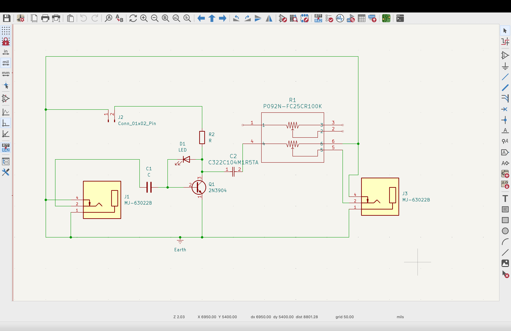
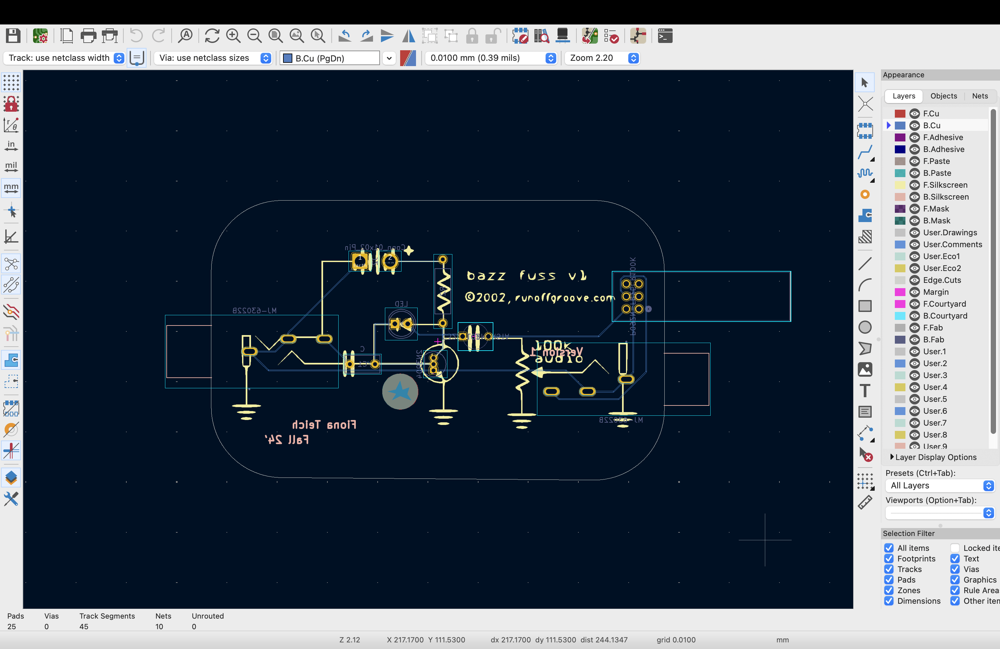
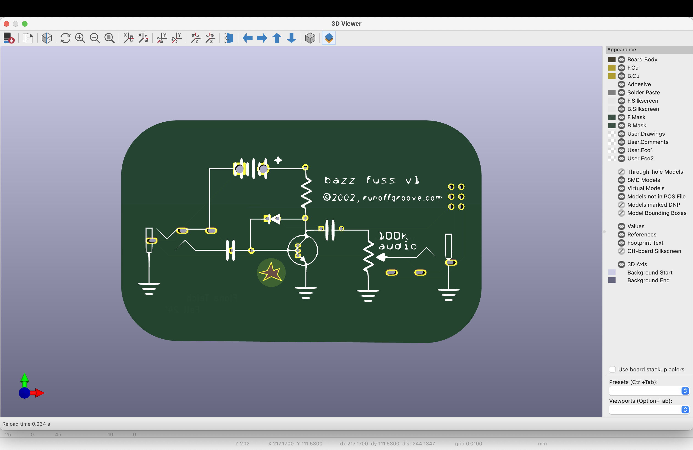
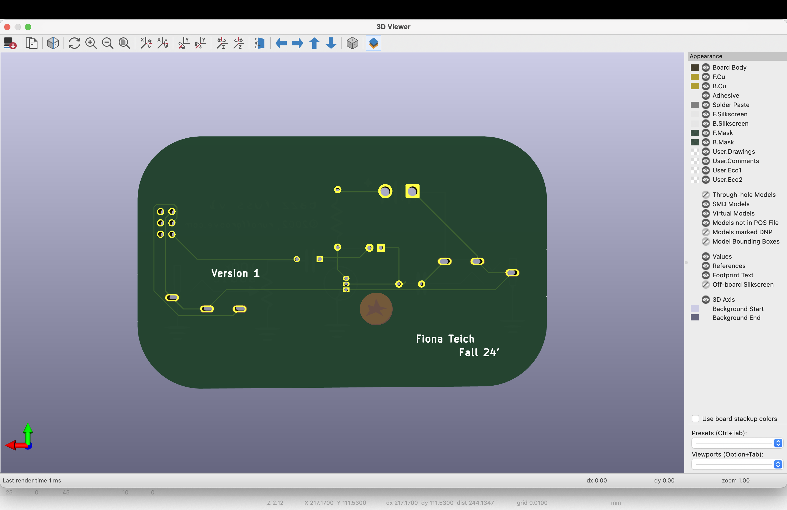

Continuing my Altoids tin theme this project was meant to be the most simple guitar/bass pedal in an Altoids tin.
This project was inspired by my internship at Synthcube in Waltham over the summer of 2024, here is where among other things I tested germanium transistors and packaged transistor-resistor pairs for 70's fuzz pedals including: Dallas Ranger, Fuzz Face, Tone Bender MKIII. I was amazed how much you could get out of such few components and I wanted to make some of my own.
Schematic and Gerber view:
 
Heres the link to where I found the schematicI added a transparent star with the intent to have the diode as an orange LED, and the light would shine through
I didn't follow through with this because I didn't have access to an LED with a low enough forward voltage
Top and bottom board view:
 